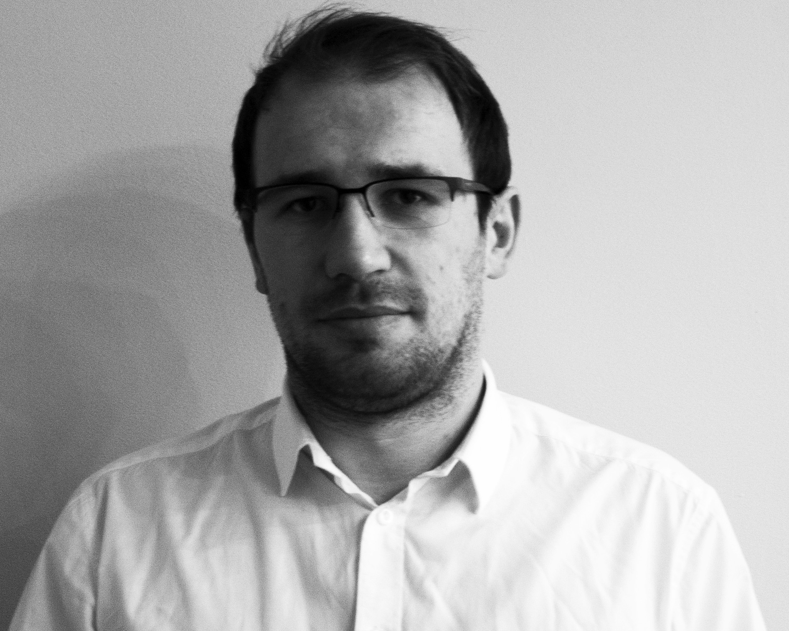

RysaPracownia ArchitektonicznaZakres działalnościKompleksowo realizujemy stawiane przed nami zadania
Do każdego zlecenia podchodzimy indywidualnie, słuchamy uważnie oczekiwań Inwestora analizujemy i przygotowujemy warianty rozwiązań. Świadomość, iż architektura to nie tylko forma ale również biznes, reklama i kontekst, pozwala na przedstawienie Inwestorowi właściwych alternatyw – decyzje zawsze podejmuje On. Większość z nas przeszła cały proces inwestycyjny na „własnej skórze” – realizując swoje domy, co pozwala nam w sposób globalny patrzeć na stojące przed nami zadania. Organizujemy i kontrolujemy wszystkie zagadnienia administracyjne w ramach powierzonych pełnomocnictw. Prace wykonujemy rzetelnie, na czas – co potwierdzają nasi stali Klienci dla których realizujemy kolejne projekty. Najlepszą nasza reklamą są nasi usatysfakcjonowani Inwestorzy.
Z przyjemnością pomożemy nadać Państwa marzeniom realny funkcjonalny kształt, a nasze zaangażowanie, entuzjazm, wiedza, doświadczenie, zdolności analityczne i determinacja są gwarancją sukcesu.
